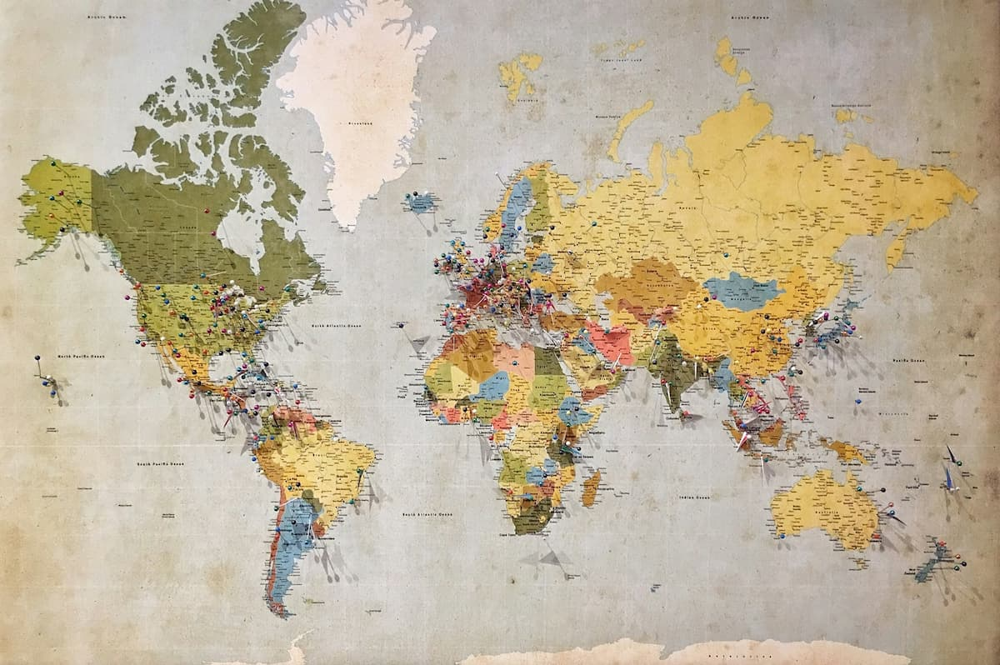

Tervetuloa!
Tällä sivustolla esittelen kolme matkakohdetta, jotka ovat pitkään olleet haaveissani: Kioto Japanissa, Islanti ja Etelä-Korean Soul. En ole vielä päässyt käymään näissä paikoissa, mutta toivon pääseväni joskus tutustumaan niihin paikan päällä.
